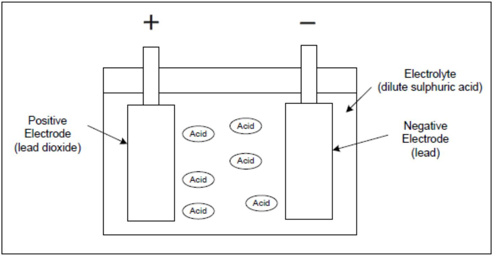
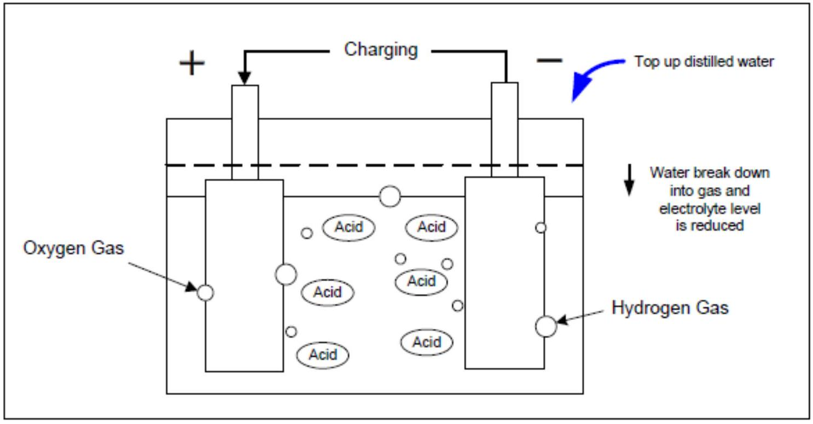
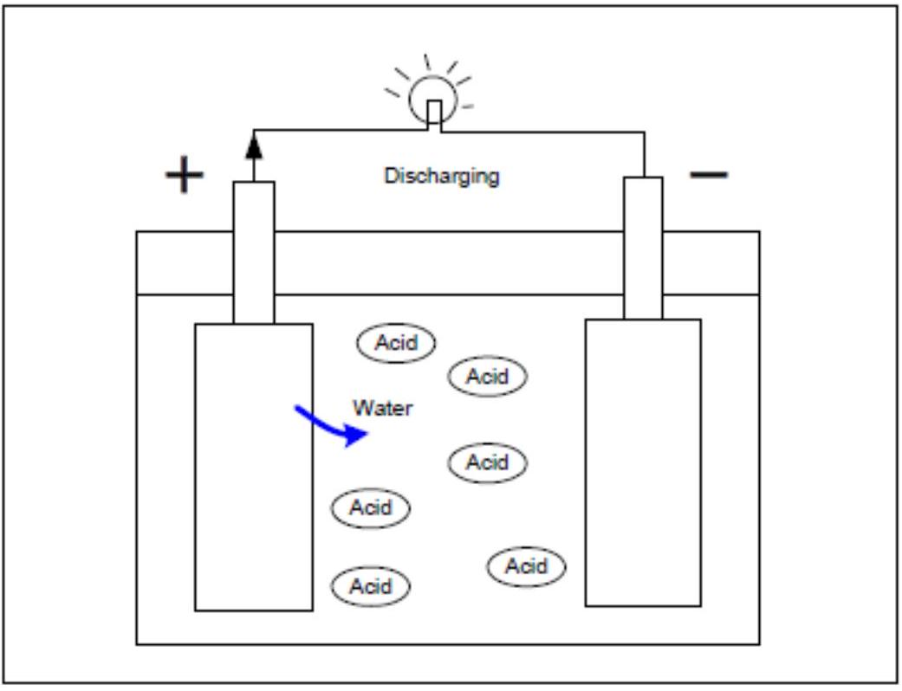

Batteries: Basics, Mechanism & State of Charge
BATTERIES
Placeholder introductory paragraph for the Batteries unit. This section may have had introductory text in the original PDF that was not captured under a specific heading in the MMD, or the heading itself served as the introduction.
BASICS OF A BATTERY
SHS use rechargeable batteries to store electricity. There are several kinds of rechargeable batteries such as Lead-acid, Ni-MH (Nickel Metal Hydride), Lithium-ion, etc. The most suitable rechargeable battery for SHS is lead-acid battery.
Advantages of Lead-acid battery are:
- Large capacity
- Low cost (Cost per capacity is the most economical among available batteries.)
Disadvantages are:
- Need to maintain electrolyte level
- Weakness against over charge and over discharge.
- Complicated behavior (capacity varies based on discharge rate and temperature)
- Heavy
- Danger of sulfuric acid
- Environmental hazard of lead electrode.
MECHANISM OF A LEAD-ACID BATTERY
A battery consists of lead alloy electrodes and electrolyte. On the positive electrode is lead dioxide and on the negative electrode is lead. The electrolyte is sulfuric acid diluted with distilled water. Reversible electro-chemical reaction enables battery to store electricity and discharge electricity. One-unit cell produces 2 V . For 12 V battery, 6 cells are connected in series.
CHARGING STAGE
During the charging stage, water of electrolyte is broken down into gas (oxygen and hydrogen) raising the specific gravity of the electrolyte. Loss of water reduces electrolyte level. When electrolyte level is lower than the indicated level, distilled water must be added to recover the level. At full charge stage, a unit cell voltage is $2.4-2.5 \mathrm{~V}(14.4 \mathrm{~V}-15 \mathrm{~V}$ for 6 cells) depends on type of battery. If overcharging occurs, loss of water tends to escalate. For maintenance free batteries especially the gel type battery, overcharging damages the battery permanently. When charging is completed, the voltage drops quickly to its stable level.
DISCHARGING STAGE
specific gravity becomes low. When the battery is fully discharged, the voltage of each unit cell is 1.75 V ( 10.5 V for 6 cells). Over discharge beyond this voltage damages battery permanently.
When a unit cell voltage is below approximately 1.95 V ( 11.7 V for 6 cells) sulfuric crystal is produced on surface of electrode. This phenomenon is called sulphation and reduces the lifetime of battery. It is very important to maintain battery voltage above $1.95 \mathrm{~V}(11.7 \mathrm{~V}$ for 6 cells). When load is disconnected, the battery voltage will recover to its stable level
STATE OF CHARGE (SOC)
Battery voltage does not always indicate the state of charge. For a more accurate measurement of charging status is more appropriate to measure specific gravity of the electrolyte. Specific gravity slightly varies depending on batteries.
| Specific Gravity | State of Charge |
|---|---|
| 1.27 | $100 \%$ |
| 1.23 | $80 \%$ |
| 1.19 | $50 \%$ |
| 1.15 | $20 \%$ |
| 1.12 | 0 |
SELF-DISCHARGING
Batteries can affect a self-discharge. From a full charge, if it is not recharged, approximately $5 \%$ (depends on battery) of its capacity is discharged per month. While batteries are stored in warehouse, it is recommended that they are charged once a month to maintain lifetime.
ELECTROLYTE
Lead-acid battery uses diluted sulfuric acid as electrolyte. However, sulfuric acid does not evaporate. If diluted sulfuric acid is spilled, it becomes concentrated sulfuric acid after the water has evaporated. Sulfuric acid damages cloths, floor, skin and eyes.
When acid is spilled, it is not enough to wipe out the acid just once because some residue always remains. Wipe at least five times. The best solution is to neutralize the acid using soda ash as a neutralizer since it is easily available.
When electrolyte level is low, add distilled water. Do not add too much distilled water than the indicated level. Some technicians still believe that higher electrolyte level increase the capacity of the battery. This is not true. Excess water reduces the specific gravity and reduces battery efficiency and causes a mess through spillage.
Never add tap water because it contains impurity and it will kill the battery.
Never add sulfuric acid. Sulfuric acid does not evaporate; therefore, top-up is not necessary.
EQUALIZATION
A 12 V battery uses 6 cells. After several operation cycles, each unit cell will have a different voltage level. For longer battery life, it is recommended that voltage of each unit cell be equalized once a month. To equalize, full charge above 14.5 V is necessary.
However, SHS uses charge controller to control charge and discharge level but this depends on the charge controller which you use. Some charge controllers have this function and others do not.
STRATIFICATION OF ELECTROLYTE
Stratification occurs when electrolyte in flooded-cells separates into layers, with the heavier electrolyte 'sinking' to the bottom of the cell and the lower density electrolyte floating to the top of the cell. Not only does this give false hydrometer readings, it also decreases the performance of the cell. Avoid stratification by occasionally giving an equalizing charge to the battery - the intense bubbling of equalization mixes up the acid.
Another way is to simply shake a battery once a week. To shake a battery, lift it up to approximately 3 cm on one side of the battery and then down it. Repeat the action 10 times.
Do not lift up the battery too high otherwise electrolyte will spill out.